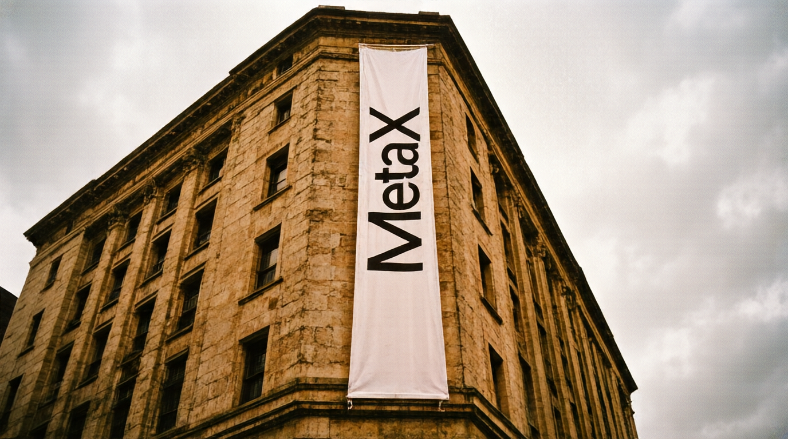

Case 01 / minimax
MiniMax Brand Rewrite
参考视频生成一条新的视频，把视频里所有"minimax"字母换成"MetaX"，把视频中的模特换成猫咪
completed_dry_run
15s reference
4 H3 shots
3 final video(s)
User input assetsOpen folder
参考视频生成一条新的视频，把视频里所有"minimax"字母换成"MetaX"，把视频中的模特换成猫咪
test_data/minimax/user_input/requirement.txt.txt
Generated reference framesOpen folder
FRAME_SCENE1.png

FRAME_SCENE2.png
FRAME_SCENE3.png
H3 prompt previewOpen
subject_definitions: <Subject 1> is the target cat protagonist: a ginger-and-cream domestic short-hair cat with amber eyes, a calm alert gaze, upright pointed ears with soft inner fur, fine whiskers and a small pink nose, a compact well-groomed body and a poised stay, sitting upright with the head lifted and the gaze directed to the right; in the closing close-up it wears oversized red geometric sunglasses. <Subject 2> is the ground-level street scene from <Picture 1>: a ground-level city street corner in front of a beige stone building, with a modern bus-stop shelter as the centered object, warm afternoon daylight, long soft ground shadows, and medium background density. <Subject 3> is the building exterior scene from <Picture 2>: a tall beige stone building facade seen from a low upward angle, with a large vertical white fabric banner hanging down its length, a cloudy overcast sky above, and a weathered stone surface. <Subject 4> is the open rooftop scene from <Picture 3>: an open rooftop terrace with a low parapet and an oversized three-dimensional lettering structure mounted on the roof, a cloudy sky beyond the parapet, warm daylight, and a clean concrete surface with a clear foreground area. <Subject 5> is the in-scene lettering "MetaX": clean geometric sans-serif capitals with slight extruded depth on a warm off-white surface, appearing as shelter-panel lettering, vertical banner lettering, 3D rooftop lettering, and a mirrored lens reflection. <Subject 6> is the red geometric sunglasses: thick red geometric frames with two rounded-rectangle mirrored lenses carrying the reflected "MetaX" lettering. <Video 1> is the reference video; only its composition, camera language, transition mechanics, action mechanics, shot order, timing rhythm, spatial relationships, contin
Final reviewOpen
# 最终交付审阅稿 (minimax-replication-outline dry run)
- 状态: `ready_with_assumptions` | 生成范围: `single_generation_task` | 时长: 15.0s
- 参考视频: `test_data/minimax/minimax.mp4` (前 15.0s 截断版本)
- 用户需求: 参考视频生成一条新的视频，把视频里所有"minimax"字母换成"MetaX"，把视频中的模特换成猫咪
- timeline_unit_count: 4 | temporal_segment_count: 8 | h3_prompt_shot_count: 4
- 说明: H3 prompt 的 `[Shot N]` 是 prompt-level shots (4 个, 对应参考级 4 个 shot); 每个 shot 内保留 8 个 temporal_segments 作为 beat 级时间范围, 未合并.
## 显式替换覆盖
- `REP001`: on-screen 'minimax' lettering / MINIMAX wordmark -> **MetaX** | segments 8/8 visible | status `covered`
- `REP002`: the model / the woman appearing in the reference video -> **cat** | segments 4/4 visible | status `covered`
- binding status: `passed`
## TU001 0.0-4.0s (4.0s) [ready_with_assumptions]
- 参考功能: `opening_hook` | 内容类型: `text_graphic`
- 生成画面: MetaX-branded bus-stop shelter on a warm city street
- 生成动作/运镜: held; only the lettering shadow drifts; static locked-off camera; eye-level observational POV
- 场景迁移: SCENE_1: ground-level urban street, beige stone building, warm daylight; structure inherited, dressing re-lettered to MetaX
- 画内文字/logo: ['in-scene physical lettering reading MetaX on the bus-stop shelter panel']
- 后期叠加: [('label', 'neutralize_allowed')]
- 节拍 `TU001_S1` 0.0-2.5s | refer=`visual_display` target=`opening_hook` | scene=SCENE_1 | ref_frame=['FRAME_SCENE1'] | status=`ready_with_assumptions`Pipeline artifact indexrun_manifest.json
| Step | Status | Stage directory | Key outputs |
|---|---|---|---|
step_01_inputs |
completed | 00_inputs |
input_manifest.json |
step_02_reference_video_analysis |
completed | 01_reference_video_analysis |
reference_video_analysis.json, video_segment_plan.json, upstream_run_manifest.json |
step_03_asset_inventory |
completed | 03_asset_inventory |
asset_candidates.json, h3_input_asset_inventory.json |
step_04_target_asset_analysis |
completed | 04_target_asset_analysisno user assets provided; VLM responses intentionally empty |
target_asset_analysis.json, target_asset_vlm_responses.json |
step_05_replication_readiness |
completed | 05_replication_readiness |
replication_readiness_check.json |
step_06_replication_outline |
completed | 06_replication_outline |
replication_outline.json, replication_outline.md |
step_07_reference_frame_plan |
completed | 07_reference_frame_plan |
reference_frame_plan.json |
step_08_reference_frames |
completed | 08_reference_frames |
FRAME_SCENE1.png, FRAME_SCENE2.png, FRAME_SCENE3.png, batch_generation_manifest.json |
step_09_h3_package |
completed | 09_h3_package |
h3_packager_input.md, minimax_h3_prompt.md, reference_mapping.md, pre_generation_checklist.md ... |
step_10_h3_video_generation |
skipped | 10_h3_video_outputdry_run_boundary: H3 request/package produced, but H3 video generation submission is intentionally not executed in this run |
request.json |
step_11_final_deliverable |
completed | 11_final_deliverable |
final_review.md, delivery_index.md, final_deliverable.json, stage_artifact_index.json |